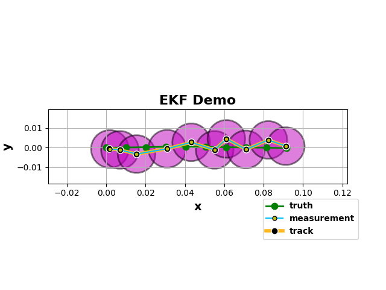

Kalman Filter¶
Kalman filters are linear models for state estimation of dynamic systems [1]. They have been the de facto standard in many robotics and tracking/prediction applications because they are well suited for systems with uncertainty about an observable dynamic process. They use a “observe, predict, correct” paradigm to extract information from an otherwise noisy signal. In Pyro, we can build differentiable Kalman filters with learnable parameters using the pyro.contrib.tracking
library
Dynamic process¶
To start, consider this simple motion model:
where \(k\) is the state, \(X\) is the signal estimate, \(Z_k\) is the observed value at timestep \(k\), \(\mathbf{W}_k\) and \(\mathbf{V}_k\) are independent noise processes (ie \(\mathbb{E}[w_k v_j^T] = 0\) for all \(j, k\)) which we’ll approximate as Gaussians. Note that the state transitions are linear.
Kalman Update¶
At each time step, we perform a prediction for the mean and covariance:
and a correction for the measurement:
where \(X\) is the position estimate, \(P\) is the covariance matrix, \(K\) is the Kalman Gain, and \(Q\) and \(R\) are covariance matrices.
For an in-depth derivation, see [2]
Nonlinear Estimation: Extended Kalman Filter¶
What if our system is non-linear, eg in GPS navigation? Consider the following non-linear system:
Notice that \(\mathbf{f}\) and \(\mathbf{h}\) are now (smooth) non-linear functions.
The Extended Kalman Filter (EKF) attacks this problem by using a local linearization of the Kalman filter via a Taylors Series expansion.
where \(\mathbf{H}_k\) is the Jacobian matrix at time \(k\), \(x_k^R\) is the previous optimal estimate, and we ignore the higher order terms. At each time step, we compute a Jacobian conditioned the previous predictions (this computation is handled by Pyro under the hood), and use the result to perform a prediction and update.
Omitting the derivations, the modification to the above predictions are now:
and the updates are now:
In Pyro, all we need to do is create an EKFState object and use its predict and update methods. Pyro will do exact inference to compute the innovations and we will use SVI to learn a MAP estimate of the position and measurement covariances.
As an example, let’s look at an object moving at near-constant velocity in 2-D in a discrete time space over 100 time steps.
[ ]:
import os
import math
import torch
import pyro
import pyro.distributions as dist
from pyro.infer.autoguide import AutoDelta
from pyro.optim import Adam
from pyro.infer import SVI, Trace_ELBO, config_enumerate
from pyro.contrib.tracking.extended_kalman_filter import EKFState
from pyro.contrib.tracking.distributions import EKFDistribution
from pyro.contrib.tracking.dynamic_models import NcvContinuous
from pyro.contrib.tracking.measurements import PositionMeasurement
smoke_test = ('CI' in os.environ)
assert pyro.__version__.startswith('1.3.0')
pyro.enable_validation(True)
[ ]:
dt = 1e-2
num_frames = 10
dim = 4
# Continuous model
ncv = NcvContinuous(dim, 2.0)
# Truth trajectory
xs_truth = torch.zeros(num_frames, dim)
# initial direction
theta0_truth = 0.0
# initial state
with torch.no_grad():
xs_truth[0, :] = torch.tensor([0.0, 0.0, math.cos(theta0_truth), math.sin(theta0_truth)])
for frame_num in range(1, num_frames):
# sample independent process noise
dx = pyro.sample('process_noise_{}'.format(frame_num), ncv.process_noise_dist(dt))
xs_truth[frame_num, :] = ncv(xs_truth[frame_num-1, :], dt=dt) + dx
Next, let’s specify the measurements. Notice that we only measure the positions of the particle.
[ ]:
# Measurements
measurements = []
mean = torch.zeros(2)
# no correlations
cov = 1e-5 * torch.eye(2)
with torch.no_grad():
# sample independent measurement noise
dzs = pyro.sample('dzs', dist.MultivariateNormal(mean, cov).expand((num_frames,)))
# compute measurement means
zs = xs_truth[:, :2] + dzs
We’ll use a Delta autoguide to learn MAP estimates of the position and measurement covariances. The EKFDistribution computes the joint log density of all of the EKF states given a tensor of sequential measurements.
[ ]:
def model(data):
# a HalfNormal can be used here as well
R = pyro.sample('pv_cov', dist.HalfCauchy(2e-6)) * torch.eye(4)
Q = pyro.sample('measurement_cov', dist.HalfCauchy(1e-6)) * torch.eye(2)
# observe the measurements
pyro.sample('track_{}'.format(i), EKFDistribution(xs_truth[0], R, ncv,
Q, time_steps=num_frames),
obs=data)
guide = AutoDelta(model) # MAP estimation
[ ]:
optim = pyro.optim.Adam({'lr': 2e-2})
svi = SVI(model, guide, optim, loss=Trace_ELBO(retain_graph=True))
pyro.set_rng_seed(0)
pyro.clear_param_store()
for i in range(250 if not smoke_test else 2):
loss = svi.step(zs)
if not i % 10:
print('loss: ', loss)
[ ]:
# retrieve states for visualization
R = guide()['pv_cov'] * torch.eye(4)
Q = guide()['measurement_cov'] * torch.eye(2)
ekf_dist = EKFDistribution(xs_truth[0], R, ncv, Q, time_steps=num_frames)
states= ekf_dist.filter_states(zs)
|  |
References¶
[1] Kalman, R. E. A New Approach to Linear Filtering and Prediction Problems. 1960
[2] Welch, Greg, and Bishop, Gary. An Introduction to the Kalman Filter. 2006.